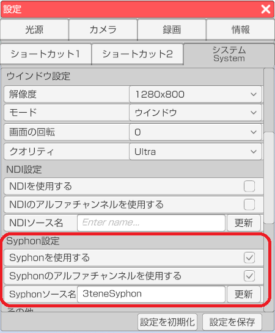
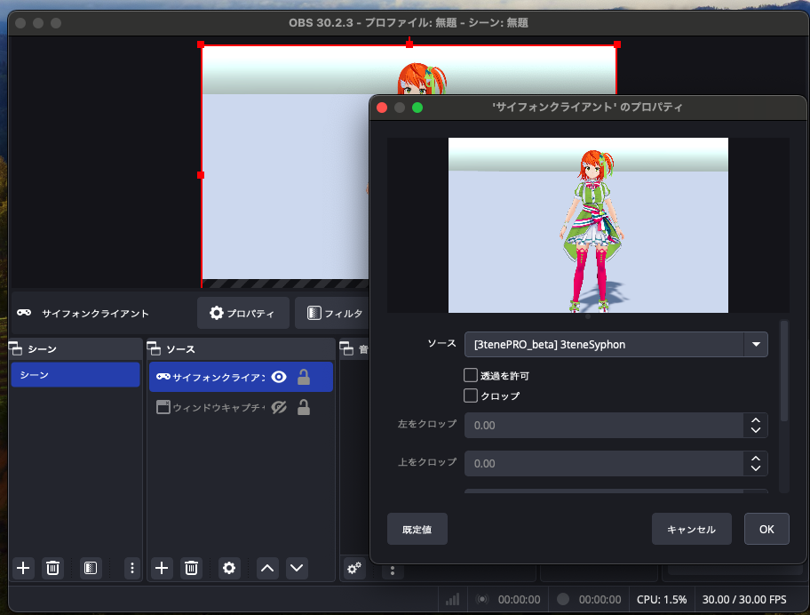

3tene の背景設定を「色設定」の「透過背景」に設定します。

OBS のソースを右クリックして「プロパティ」を選択、
「透過を許可」をチェック状態にします。
Syphon の経由の画面参照を行う事で他のアプリで 3tene の画面が参照可能になります。
Mac 外部への出力はできませんが NDI を使うよりも低負荷、低遅延になります。
※3teneFREE は対応していません。
※Mac 版の専用機能です。
Syphon を経由する 3tene の画面は
仮想カメラ機能と同様にメニューやウインドウが録画対象とならないので
アバターと背景のみの画面参照となります。
この機能を利用するには、映像を参照するソフトウェアが
Syphon に対応している必要があります。
録画配信ソフトの OBS ではプラグイン無しで使用可能です。
下記サイトを開きます。
設定 - システム - 「Syphonを使用する」 にチェックを入れます。
Syphon ソース名のデフォルトは「3teneSyphon」ですが、変更することが可能です。
受信側で 3tene 内で設定したソース名を選択すると映像が表示されます。
<
ソースの「サイフォンクライアント」を選択して追加します。
「サイフォンクライアント」のプロパティの「ソース」に
3tene で設定した「Spoutソース名」を選択してください。
<
3tene の背景設定を「色設定」の「透過背景」に設定します。
OBS のソースを右クリックして「プロパティ」を選択、
「透過を許可」をチェック状態にします。